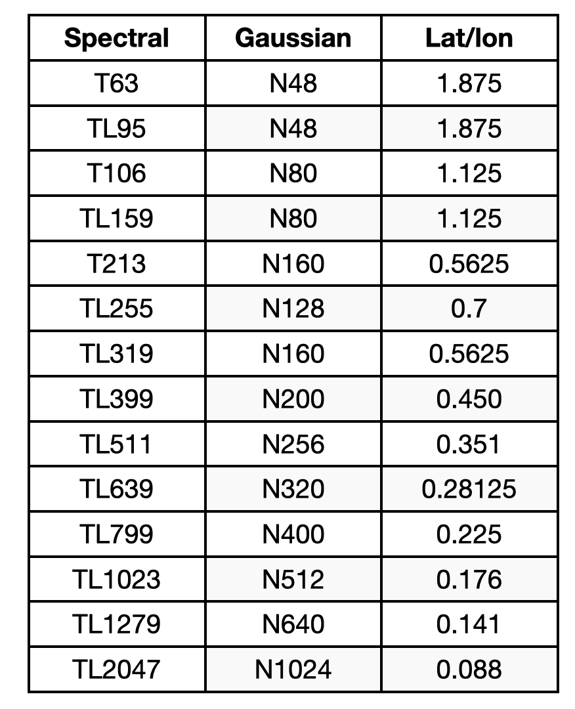
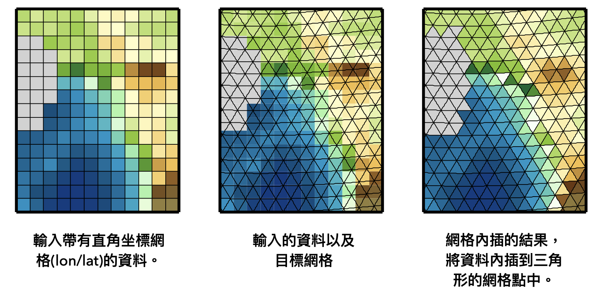
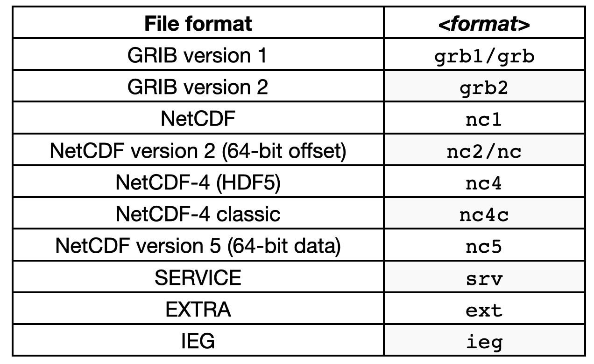

11. Climate Data Operator (CDO)¶
CDO是由德國Max-Plank Institute for Meteorology研發出的軟體，它擁有許多可以處理標準氣候資料和預報模式資料的指令 (Operator)，包括簡易的統計、算數、資料選擇、時間和空間網格處理、內插等，是一套方便又強大的工具。以往必須在命令列 (Command Line) 使用cdo，現在MPI把這套套件寫成Python的套件，因此也可以在Python程式中使用。
在這套講義中，我們主要會學習
選擇資料中特定時間、空間、垂直層資料，或是特定的變數。
計算簡易統計量。
資料算術。
資料網格內插。
轉換資料格式。
Caution
cdo計算後的產品都是輸出.nc檔，不像在前面的單元中所學會輸出成一個矩陣在Python內部使用。因此計算完後，如果在程式中需要使用這筆資料，必須再用xarray.open_dataset讀進程式。
cdo基本指令¶
Linux指令列 (Command Line)¶
在Linux的指令列操作cdo的方式如下：
cdo [Options] Operator1 [-Operator2] [-OperatorN] infile outfile
也就是針對檔案infile操作指令OperatorN後，會得到計算好的結果outfile。
若想要在一個命令列中執行N個指令，可以利用[-OperatorN]的方式 接起來；而cdo執行的順序為[-OperatorN] →[-Operator2]→Operator1.
資料選擇 (Select Field)¶
cdo有完整的指令說明書，可從官網上下載。我們從最簡單的資料選擇開始示範起，在看範例之前，可以先試著透過搜尋說明書自己做做看，例如資料選擇的方法記載在說明書的2.3節。
Example 1: 如何選取1998-2018年每年12月的OLR資料?
選取資料範圍使用select的方法函數。
1. Command Line:
cdo select,year=1998/2018,month=12 data/olr.nc data/olr_1998-2018.12.nc
2. Python:
cdo.select('year=1998/2018,month=12', input='data/olr.nc', output='data/olr_1998-2018.12.nc')
'data/olr_1998-2018.12.nc'
或是
cdo.selyear('1998/2018', input=cdo.selmon('12', input='data/olr.nc'),
output='data/olr_1998-2018.12.nc')
'data/olr_1998-2018.12.nc'
Example 2 Select Field and Operator Chaining: 先以cdo合併NCEP R2 u850風場檔案時間，再選出NDJ的資料。
1. Command Line:
cdo select,month=1,11,12 -mergetime data/ncep_r2_uv850/u850.*.nc data/ncep_r2_u850_ndj.nc
2 Python:
cdo.select('month=1,11,12',
input=cdo.mergetime(input='data/ncep_r2_uv850/u850.*.nc'),
output='data/ncep_r2_u850_ndj.nc')
'data/ncep_r2_u850_ndj.nc'
Note
mergetime: Merges all timesteps of all input files sorted by date and time. All input files need to have the same structure with the same variables on different timesteps. After this operation every input timestep is in outfile and all timesteps are sorted by date and time.cat: Concatenates all input datasets and appends the result to the end of outfile.
Warning
如果資料太大時 (e.g. 解析度太高導致資料太大……)，先做mergetime再選擇時間，可能會導致合併後的副產品太大而記憶體無法負荷。因此，也可以寫一個程式帶有for迴圈，先每一年選擇月份並輸出資料，最後再把這些中間產品全部合併起來。
Example 3 選擇特定區域的資料： 使用sellonlatbox選擇40˚-180˚E、20˚S-30˚N區域的資料。
1. Command Line:
cdo sellonlatbox,40,180,-20,30 data/olr.nc olr_selbox.nc
2. Python:
cdo.sellonlatbox('40,180,-20,30',
input='data/olr.nc',
output='data/olr_selbox.nc')
'data/olr_selbox.nc'
統計 (Statistics)¶
統計方法在說明書的第2.8節，例如sum, mean, avg, var, std, weighted avg and var…，請自行參閱其定義及用法。
Note
What’s different between mean and avg? To distinguish two different kinds of treatment of missing values:
mean: only the not missing values are considered to belong to the sample with the side effect of a probably reduced sample size.avg: just adding the sample members and divide the result by the sample size.E.g.: the mean of 1, 2, miss and 3 is (1+2+3)/3 = 2, whereas the average is (1+2+miss+3)/4 = miss/4 = miss. If there are no missing values in the sample, the average and the mean are identical.
Example 4: 利用CDO計算1998-2018年OLR降水資料十二月的長期平均。
1. Command Line:
cdo timmean -select,year=1998/2018,month=12 data/olr.nc olr_dec_ltm.nc
2. Python:
cdo.timmean(input=cdo.select('year=1998/2018,month=12', input='data/olr.nc'), output='olr_dec_ltm.nc' )
'olr_dec_ltm.nc'
Example 5: 計算日氣候平均 計算olr.nc的日氣候平均。
1. Command Line:
cdo ydaymean data/olr.nc data/olr_dayClim.nc
2.Python:
cdo.ydaymean(input='data/olr.nc', output='data/olr_dayClim.nc')
'data/olr_dayClim.nc'
算術 (Arithmetics)¶
cdo的算術(以EXPR的operator表示)包括= (assignment)、加 (x+y)、減 (x-y)、乘 (x*y)、除 (x/y)、絕對值abs(x)、開根號sqr(x)、取指數exp(x)等。
Example 6: NCEP MSLP資料原先單位是Pa，利用cdo將資料轉換成hPa。
1. Command Line:
cdo expr,'mslp=mslp/100' mslp.2021.nc mslp.hpa.2021.nc
2. Python:
cdo.expr('mslp=mslp/100.', input='data/mslp.2021.nc', output='data/mslp.hap.2021.nc')
'data/mslp.hap.2021.nc'
網格內插 (Interpolation)¶
例如當兩組資料網格解析度不同卻需要在相同網格上比較和分析時，或是降低資料的網格解析度以節省計算空間，或是處理模式結果時，我們需要改變資料的網格解析度。cdo有很好用的網格內插工具，可以處理球諧函數的網格座標 (spherical harmonics)、高斯座標 (Gausian Field)、直角坐標系 (Longitude/Latitude)等。這三種座標系統的解析度大約如下表所示：

內插到標準網格¶
remapbil：Bilinear interpolation，是最常使用的網格內插方法。

1. Command Line:
cdo remapbil,n32 data/olr.nc data/olr.n32.nc
2. Python:
cdo.remapbil('n32', input='data/olr.nc', output='data/olr.n32.nc')
'data/olr.n32.nc'
內插到任意網格¶
首先要對目標網格建立一個網格資訊檔。以NCEP R2的網格作為範例如下：
gridtype = lonlat
xsize = 69
ysize = 17
xfirst = 40
xinc = 2.5
yfirst = -20
yinc = 2.5
以上的檔案包含了網格型態、網格數、起始點等資訊。將這個網格資訊檔放入目前的資料夾中(取名為ncep_grid)，就可以使用它來進行網格內插了。
Example 7: 將CMORPH資料 (解析度0.25度) 內插到NCEP R2網格。
1. Command Line:
cdo remapbil,ncep_grid data/cmorph_sample.nc data/cmorph_remap.nc
2. Python:
cdo.remapbil('ncep_grid', input='data/cmorph_sample.nc', output='data/cmorph_remap.nc')
'data/cmorph_remap.nc'
以上的範例受限於我們提供的CMORPH資料並非全球網格。如果針對全球資料，進行內插時ncep_grid網格資訊檔應寫為
gridtype = lonlat
xsize = 144
ysize = 73
xfirst = 0
xinc = 2.5
yfirst = -90
yinc = 2.5
檔案輸出格式¶
CDO預設輸出的檔案格式為netCDF檔案，如果想要更改，可以在Operator前加上option -f <format>。可接受的格式如下‘：

1. Command Line:
cdo -f grb2 copy data/olr.nc data/olr.grb2
2. Python:
cdo.copy(option='-f grb2',
input='data/olr.nc',
output='data/olr.grib2')
'data/olr.grib2'
Binary二元進位檔¶
有些檔案是以二元進位 (binary) 的格式儲存的，檔案本身沒有網格資料，但通常會有附加的控制檔.ctl，告訴使用者要如何讀取這類檔案。二元進位檔在GrADS很常使用，利用cdo，也可以將二元進位檔轉換成netCDF格式。
首先控制檔格式如下：
DSET infile.bin
OPTIONS sequential
UNDEF − 9 e + 3 3
XDEF 360 LINEAR −179.5 1
YDEF 180 LINEAR −89.5 1
ZDEF LINEAR 1 1
TDEF 1 LINEAR 00:00 Z15jun1989 12hr
VARS 1
param 1 99 description of the variable
ENDVARS
1. Command Line:
cdo -f nc import_binary infile.ctl outfile.nc
2. Python:
cdo.import_binary(input='infile.ctl', output='outfile.nc', option='-f nc')